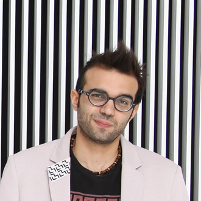

Mission
We believe that playing the piano is first and foremost an act of music making, and making music is ultimately a means of human expression.
We wish to empower people on a lifelong journey of musical discovering, opening vibrant worlds of imagination and expression, beyond the popular conception of learning as rote repetition.
We offer technologies to support effective, meaningful, and fulfilling learning experiences on the piano rather than false promises of “quick, easy mastery” of musical paint-by-numbers.

MirrorFugue
Inspired by reflections on the lacquered surface of the piano, MirrorFugue augments an acoustic player piano with life-sized projections to evoke the illusion of virtual pianist playing the physically moving keys.
Story
Six years ago when I was practicing the piano one day, I looked at the reflection of my hands on the surface of the piano and thought wouldn’t it be quite lovely if instead of seeing my own hands, I could see someone else’s hands, and the piano could serve as a portal to someone from far away or even from another time. Shortly after, I started graduate studies at the MIT Media Lab and started trying to make this idea a reality. read more
My first term in grad school, I took a music improvisation class with visiting artist Donal Fox, which led to a parallel journey into the art of piano playing, whose insights deeply influenced my work at lab. I began piano lessons at age 4, and it wasn’t particularly fun. I spent many hours relentlessly programming notes into my fingers, with expression an afterthought to correctness. Motivation largely came from competitions, after which pieces would soon fade from muscle memory, and the whole process would begin again. It wasn’t particularly fun. Maybe you’ve had a similar experience. Despite the difficulty, many people still wish to learn to play, and there are plenty of tools that claim an easy path to mastery such as light-up keyboards that show you what notes to play, much like paint-by-numbers. In the past few years, I’ve learned that boredom and frustration are not an inevitable part of learning music. I’ve also learned that the paint-by-numbers approach quickly hits a ceiling. The key to music-making is understanding it’s not just about hitting the correct notes but about communication and expression. The key to expression is to always engage the body, both in understanding of technique and channeling of feeling. My own progress toward deeper musical understanding shaped the development of MirrorFugue. Over several years and iterations, I arrived at the current prototype, which not only presents a useful display of hands and body information but simulates the feeling that the virtual pianist is physically present. On MirrorFugue, we may watch the masters and play with them to absorb elements of their fingering and style. A teacher may demonstrate to a student at a distance. We may also record themselves to evaluate our own progress, even playing a duet with ourselves in the past. Over the past two years, MirrorFugue has been presented at events such as TEDxBoston and Aspen Ideas Festival, exhibited as art installation in London, Tokyo, and New Orleans, featured on TV, print, and web media. We are now transforming it into a product for the real world. Xiao Xiao
Testimonials
- “This is genius!” - J.J. Abrams
- “Beautiful!” - George Takei
- “This needs to be out in the world” - Joel Beckerman
- “You can also absorb elements of what they do. I really felt like he was there, like I’m playing with him.” - Aya Iwata, pianist
- “I can easily follow the hands to copy what they play. I can also feel the dynamics, phrasing, how they breathe with it” - David Rose, technologist
- “It’s not just passive listening. It gives you the feeling of success even though you’re not the one who’s playing. [MirrorFugue] creates the feeling of creating something, which is beautiful.” - Roz Picard
Herbie Hancock improvises with virtual reflection of Donal Fox
Ryuichi Sakamoto improvising on MirrorFugue
Malala Yousafzai interacting with MirrorFugue
Marvin Minsky duet with himself
Team
Michael DiBenigno
Michael DiBenigno is a 2015 MBA candidate at The MIT Sloan School of Management. While at MIT he has helped analyze and build the Creative Arts Entrepreneurship community both as co-chair for Hacking Arts and sector leader for the Martin Trust Center for Entrepreneurship. A former technology consultant with Deloitte, with startup experience, he brings an analytical, and strategic business background, coupled with a strong passion for the creative arts to the team. Independently he has explored alternative music notations and piano keyboard designs having felt frustrated by traditional teaching of both music theory and playing.
Xiao Xiao
A final-year PhD candidate in the Tangible Media Group of the MIT Media Lab, Xiao Xiao developed MirrorFugue over the course her graduate studies. Xiao began piano studies at age 4 and continues to play today, mentored by composer/pianist Donal Fox. She brings to the team a guiding vision on effective and fulfilling music learning, fueled by her extensive experience in both the wrong and right ways to learn. A background in human computer interaction enables her to integrate these insights into the design of new technologies. Xiao has presented her work at TEDxBoston, TEDxSan Diego, and Aspen Ideas Festival as well as at various academic conferences, on international television programs, and as art exhibitions in London, Tokyo, and her hometown New Orleans. Xiao holds a B.S. in Computer Science from MIT with a minor in Architecture.
Donald Derek Haddad

Donald-Derek is a (confirmed) future Master's student at the MIT Media Lab where he will be exploring the realm of cross reality interactions in Responsive Environments with Prof. Joe Paradiso. A 1337hax0r from a past life, he built the Pirate-TV, an open source smart television and contributed to many other open source projects. He also co-founded several companies that never saw the light of commercial success, but the experiences catapulted his deployment abilities and catalysed his motivation for deeper learning. He brings to the team his full-stack engineering expertise to build and scale the ecosystem that integrates augmented musical instruments with the web. Speaking of which, he teamed up with Basheer Tome last semester at the Media Lab, and together they built MMODM, a massively multiplayer online drum machine powered by Twitter.